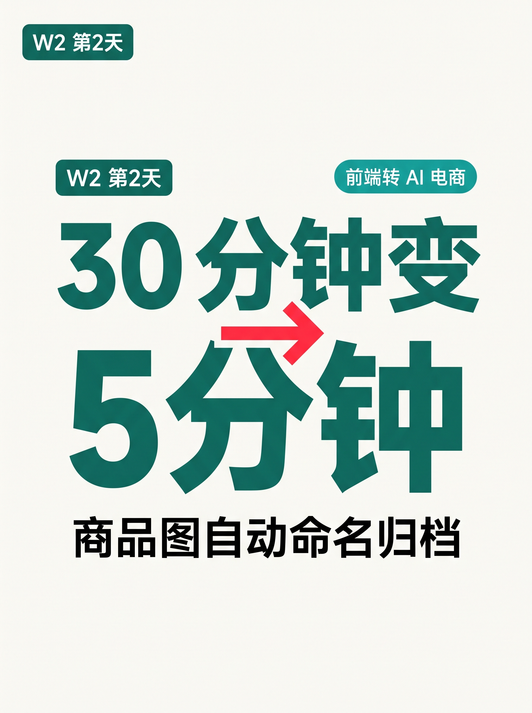
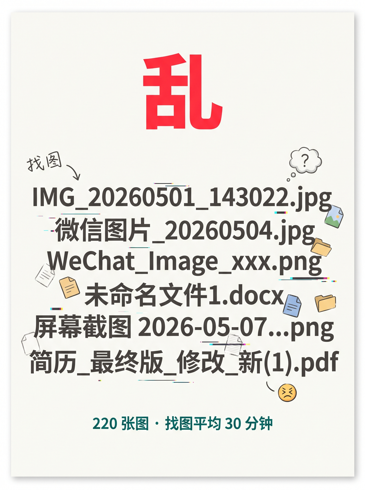
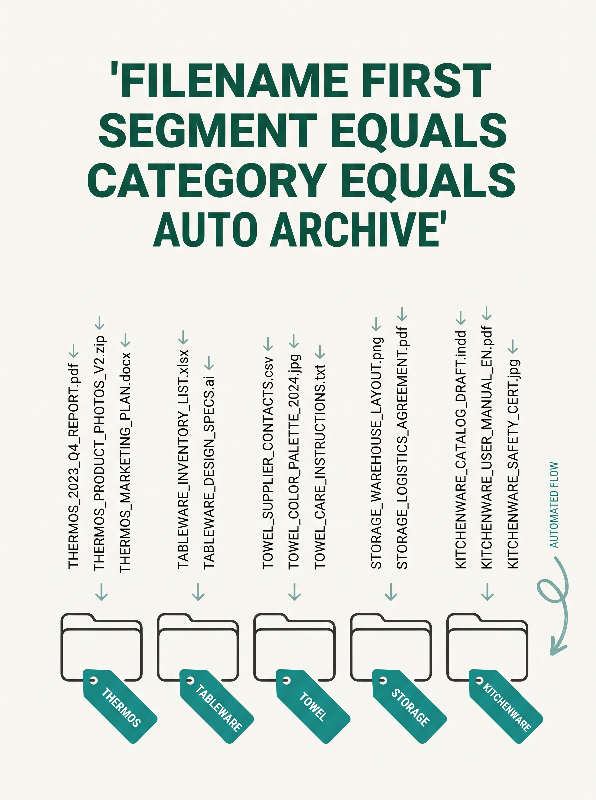
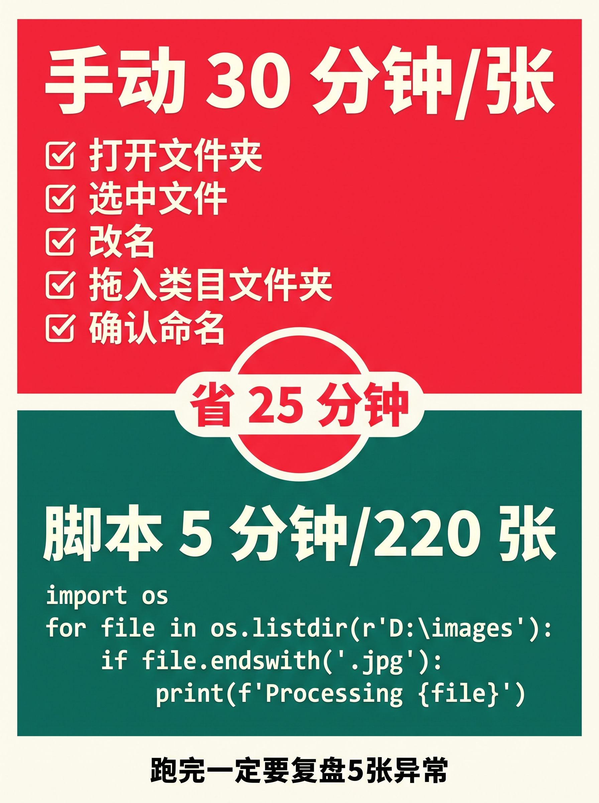
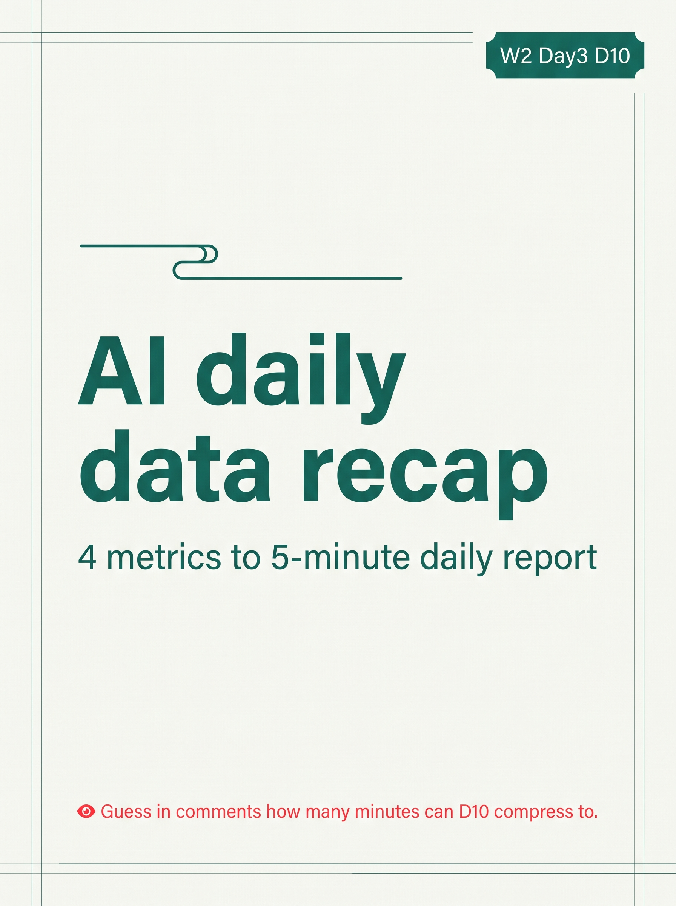

使用说明:所有内容已按发布标准预排好,发布前请用最下方 3 个复制按钮。
6 张图按顺序上传,标题"商品图自动命名 · 30 分钟变 5 分钟"(XHS 上限 20 字 ✓)。






AI 数据日报 · 30 分钟变 5 分钟
D9 评论区:"半自动"27 + "全自动"14 + "手动"9。
承诺满 30 写细节 ——
兑现。
之前每天:
打开小红书 → 拉数据 → 写"昨天怎么样"
反复 30 分钟。
现在:
4 项指标 → 1 模板 → 1 脚本 → AI 解读
5 分钟看完昨天。
───── 4 项指标(够了)─────
① 曝光 ② 点赞 ③ 收藏 ④ 评论
D2-D9 跑出来的最小集。
───── 模板表(5 日均线)─────
日期 / 曝光 / 点赞 / 收藏 / 评论 / 状态
0625 / 487 / 32 / 18 / 12 / 🟢
0626 / 612 / 41 / 28 / 15 / 🟢
0627 / 358 / 22 / 11 / 9 / ⚠ 跌破均线
连续 3 天 ⚠ = 改封面或改标题
───── 4 行脚本 ─────
import requests, datetime as dt
def gm(d): return requests.get(
f"api?date={d}").json()
print(dt.date.today(), gm("yesterday"))
───── 实测 ─────
30 分钟/天 → 5 分钟/天
一个月省 12 小时
───── 兑现"半自动识别" ─────
27 票半自动(差 3 票满 30),先回应。
"半自动" = 已用部分自动化,但识别靠人工
┌──────────────────────────┐
│ 3 条识别细节: │
│ ① 异常靠肉眼比 = 错 │
│ → 写 1 条均线对比函数 │
│ ② 解读凭经验 = 不稳定 │
│ → AI 模板 3 行,人改 │
│ ③ 状态靠心情 = 主观 │
│ → 均线 + 3 天黄灯 │
└──────────────────────────┘
───── Day 11 预告 ─────
Day 11 · Python 串起 Kimi API
猜:又能省几分钟?
你怎么复盘?
告诉我你是"手动" / "半自动" / "全自动"哪一档
"手动"档多的话明天专写"AI 解读模板" 👇
关注我,看 30 天跑完我会得出什么结论 🌱
#前端转AI电商
#AI电商
#数据复盘
#自动化
#电商效率
♡ 收藏
💬 评论
↗ 分享
📋 一键复制
📊 D10 数据复盘
规则成本: 4 段命名 = 1 小时定稿,后面所有商品图复用(只要不新造类目/颜色/场景就不改规则)
脚本成本: 4 行 Python + 1 个类目文件夹总览表(共 5 分钟写完),跑 220 张图 90 秒
实测数字: 手动 30 分钟 / 张 → 脚本 5 分钟 / 220 张(总耗时含 AI 复核)= 省下 25 分钟/次
异常处理: 5 张异常必须人工修(AI 推荐错/颜色写错/编号断号)= 流程化思维里的"复核关卡"不可省
互动钩子: 问"手动/半自动/全自动"看你现在的状态 —— 状态型钩子,W2 工具类实测天然高评论
🚀 发布前 15 分钟 SOP
- 打开小红书 App → 创建笔记
- 选 6 张图(封面 1 + 内页 5),按顺序排好
- 选 3:4 竖图
- 标题:AI 数据日报 · 30 分钟变 5 分钟
- 正文:点"复制正文"按钮粘贴
- 加 5 个标签
- 选发布时间:周三 20:00-21:00(W2 第 3 篇 + 工具类+兑现承诺天然高互动)
- 发布
📈 发布后 24 小时 SOP
| 时间 | 动作 | 目标 |
|---|---|---|
| 10 分钟 | 自己评论 1("你现在怎么命名商品图?" + 三选一) | 激活引导型评论区 |
| 30 分钟 | 每条评论都认真回复(尤其选"半自动"的继续追问 1-2 句) | 评论区密度提升推荐 |
| 2 小时 | 截图保存首日数据 | W2 复盘素材 |
| 6 小时 | 看一次数据(曝光/收藏/评论/三选一分布) | 判断是否二次推 |
| 24 小时 | 统计新一轮"半自动"票数(满 30 D11 兑现"AI 解读模板"承诺) | 决定 D11 选题方向 |
🎯 Day 10 数据目标
| 指标 | 目标 | 备注 |
|---|---|---|
| 曝光 | ≥ 1200 | W2 工具类 + 兑现承诺标签天然高曝光 |
| 收藏率 | ≥ 8% | 模板表 + 脚本片段 + 识别细节天然高收藏 |
| 评论 | ≥ 80 | 三选一钩子(手动/半自动/全自动)沿用 D9,识别细节+1 段惊喜内容 |
| 涨粉 | ≥ 100 | 工具粉更精准,W2 中段冲一波 |
| 三选一分布 | 新一轮"半自动" ≥ 30 | 满 30 D11 兑现"AI 解读模板"承诺 |
💡 关键设计点
1. 标题 = 主题 + 数字对照
- "AI 数据日报" = 主题(用户知道在讲什么)
- "30 分钟变 5 分钟" = 数字对照钩子(兑现 D9 数字格式)
- 字数 14 字,XHS 上限 20 ✓
2. 正文 = 5 段式 + 兑现承诺
- 兑现(D9 评论区承诺 + 半自动 27 票回应)
- 4 项指标(曝光/点赞/收藏/评论,D2-D9 最小集)
- 1 个模板表(5 日均线 + 跌破自动标 ⚠)
- 1 条脚本(4 行 Python + 1 个 print)
- 3 条识别细节(肉眼/经验/心情 → 均线/AI/3 天黄灯)
3. 图文对应
- 图 01 = 封面("30 min → 5 min"大字 + "AI 数据日报自动化"副标 + 表格图标)
- 图 02 = 痛点(4 个 ❌ 流程,红色警示)
- 图 03 = 4 项指标(① ② ③ ④ 圆形编号 + 每项说明)
- 图 04 = 1 个模板表(表格 + 跌破均线红色高亮 + 底部说明)
- 图 05 = 对比+脚本(红色 ❌/绿色 ✓ + 中间箭头 + Python 代码块)
- 图 06 = Day 11 预告(墨绿背景 + ""符号,工程师视角)
4. 兑现 D9 承诺 + 升级钩子
- D9 评论区"半自动 27 票"(差 3 票满 30) → D10 直接兑现识别细节(差票也写 = 公开承诺兑现)
- D8 客服 → D9 商品图 → D10 数据复盘 = W2 三件工作流验证全部出场
- 钩子沿用:D9 三状态(手动/半自动/全自动)→ D10 同样引导投票 + D11 继续扩展
⚠️ 注意事项
- 4 项指标不要扩 —— 曝光/点赞/收藏/评论已是 D2-D9 跑出来的最小集,扩了反而看不到趋势
- 5 日均线不要改公式 —— 跌破均线 = ⚠,连续 3 天 ⚠ = 红灯,这是规则核心改了脚本就废
- "半自动"识别细节必须真写 —— D9 评论区承诺,差 3 票也兑现 = 不让承诺失效
- 正文用"我"视角 —— 跟 D9 工作流验证一致,第一人称拉近距离
- 6 张图必须按顺序 —— 封面(钩子)→ 痛点 → 指标 → 模板表 → 对比+脚本(杀手锏)→ 预告
- 3 条识别细节不可省 —— 肉眼/经验/心情 都是"半自动"用户的真痛点,兑现才能积累信任
- tags 用 5 个版本 —— 跟 D9 一致:#前端转AI电商 #AI电商 #数据复盘 #自动化 #电商效率